Bilgisayar Nasıl Çalışır? Programın Yaşam Döngüsü ve İlk C Programı
Klavyede yazdığımız printf("Merhaba"); satırı, ekranda piksellere dönüşene kadar hangi katmanlardan geçer?
Bu haftanın hedefleri
- Bilgisayar sistemini soyutlama katmanları (donanım, komut kümesi mimarisi, işletim sistemi, derleyici, uygulama) üzerinden açıklar.
- Von Neumann mimarisinin bileşenlerini (CPU: ALU, kontrol birimi, yazmaçlar; bellek; G/Ç; veri yolu) ve getir–çöz–yürüt döngüsünü açıklar.
- Bit, bayt, ikili ve onaltılı sayı sistemlerinde temel dönüşümleri yapar; verinin bellekte ikili örüntüler olarak saklandığını kavrar.
- Kaynak koddan çalışan sürece uzanan derleme hattını (önişlemci → derleyici → çevirici → bağlayıcı → yükleyici) adım adım açıklar.
- Geliştirme ortamını kurar; ilk C programını derler, çalıştırır ve derleyici ile bağlayıcı hata iletilerini ayırt eder.
Bir satırın yolculuğu
Bu dersin ilk satırı çoğu zaman printf("Merhaba, Dünya!\n"); olur. Bu hafta bu tek satırın izini süreceğiz: Karakterler bir dosyaya yazılır, bir dizi programdan geçerek işlemcinin anladığı sayılara dönüşür, bellekte yer alır, işletim sistemine bir istek olarak ulaşır ve sonunda ekranda birkaç yüz pikselin rengini değiştirir. Yanıtı sayfa boyunca parça parça kurup en sonda tek bir şekilde birleştireceğiz.
Soyutlama katmanları
Bir otomobili kullanmak için motordaki yanmayı bilmemiz gerekmez: Pedala basarız, araç hızlanır. Pedal, altındaki karmaşık sistemin soyutlamasıdır (abstraction). Bilgisayar da üst üste binmiş soyutlama katmanlarından oluşur; her katman alttakinin ayrıntılarını gizler, üsttekine daha basit bir arayüz sunar. Bu dersin “Kaputun altında” kutuları tam da bu kaputu kaldırıp bir alt katmana bakmak içindir.
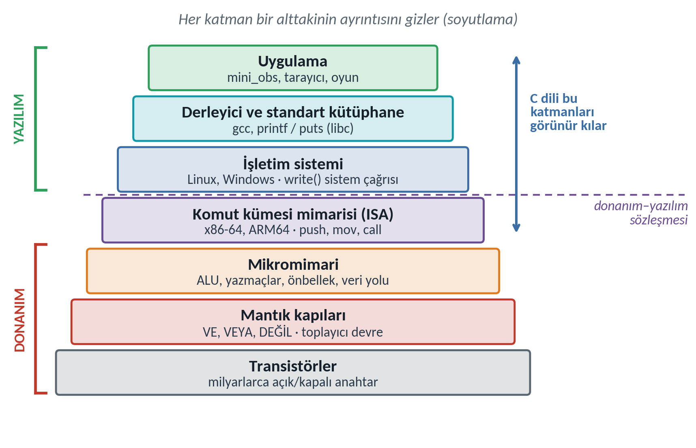
| Katman | Ne yapar? | Bu haftaki örneği |
|---|---|---|
| Transistör → mantık kapısı | Açık/kapalı anahtarlar VE, VEYA, DEĞİL kapılarını kurar. | milyarlarca transistör |
| Mikromimari | Kapılardan ALU, yazmaçlar ve önbellekler kurulur. | lscpu çıktısındaki L1–L3 |
| Komut kümesi mimarisi (ISA) | İşlemcinin tanıdığı komutların listesi; donanım ile yazılım arasındaki sözleşme. | x86-64 (uname -m → x86_64) |
| İşletim sistemi | Donanımı programlar arasında paylaştırır; dosya, süreç, ekran gibi kaynaklara sistem çağrılarıyla erişim verir. | Linux, write sistem çağrısı |
| Derleyici ve kütüphane | C kodunu makine koduna çevirir; printf gibi hazır fonksiyonları sağlar. | gcc, libc |
| Uygulama | Kullanıcının gördüğü program. | ./merhaba |
C bu katmanların ortasındadır: Yüksek düzeyli bir dildir ve aynı kaynak kod farklı işlemcilerde derlenebilir; ama belleği, adresi ve veri temsilini gizlemediği için alttaki katmanları görünür kılar. C'ye bu yüzden zaman zaman “taşınabilir assembly” denir.
Von Neumann mimarisi
Günümüz bilgisayarlarının neredeyse tamamı, John von Neumann'ın 1945'te EDVAC için yazdığı rapordaki düzeni izler (von Neumann, 1945). Bir mutfak benzetmesiyle: CPU tarifi uygulayan aşçı, program sayacı tarifte kalınan satır, bellek numaralı dolaplar, veri yolu da mutfaktaki koridordur.
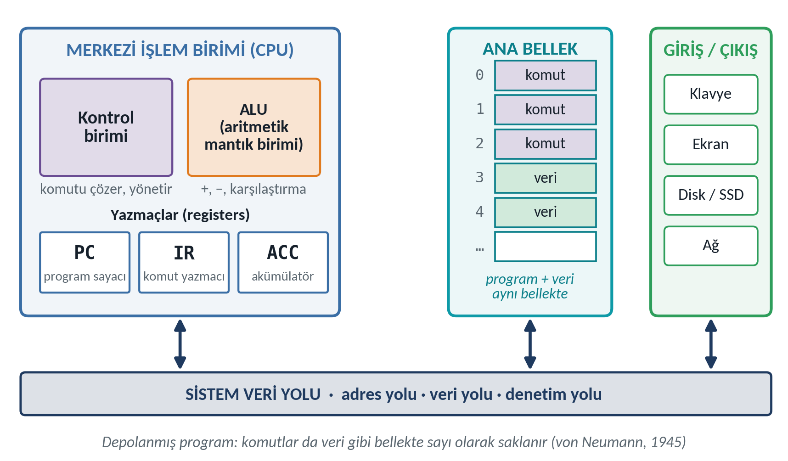
| Bileşen | Görevi |
|---|---|
| Kontrol birimi (control unit) | Komutu çözer, diğer birimlere ne yapacaklarını söyler. |
| ALU (arithmetic logic unit) | Toplama, çıkarma, karşılaştırma ve mantık işlemleri. |
| Yazmaçlar (registers) | CPU içindeki çok hızlı küçük saklama alanları. PC (program sayacı) sıradaki komutun adresini, IR yürütülen komutu tutar. |
| Ana bellek (RAM) | Numaralı hücreler: Her hücrenin bir adresi ve bir içeriği vardır. |
| Giriş/çıkış (G/Ç) | Klavye, ekran, disk, ağ. |
| Veri yolu (bus) | Bileşenler arasında adres, veri ve denetim sinyallerini taşır. |
Mimarinin kilit fikri depolanmış program (stored program) kavramıdır: Program da veri gibi bellekte sayılar olarak saklanır. İşlemci bir hücredeki sayıyı, program sayacı onu gösteriyorsa komut, bir komut onu istiyorsa veri olarak yorumlar; hücre “ben komutum” diye bir etiket taşımaz. Harf, resim, ses ve program bellekte aynı biçimde, bit örüntüleri olarak durur; anlamı onu okuyan program verir.
Getir–çöz–yürüt ve oyuncak bilgisayar
İşlemci açık kaldığı sürece üç adımı tekrarlar: Getir (fetch): PC'nin gösterdiği adresteki komutu IR'ye getir ve PC'yi ilerlet. Çöz (decode): İşlemi ve adresi belirle. Yürüt (execute): İşlemi yap; gerekirse ALU'yu, belleği ya da G/Ç birimini kullan. Döngüyü işlemcinin saati (clock) yönetir; 3 GHz'lik bir işlemcide saat saniyede yaklaşık üç milyar kez “tik” atar.
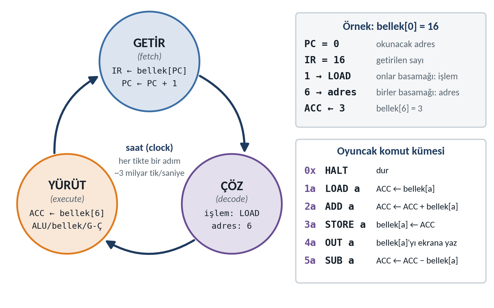
Gerçek komutları izlemek başlangıçta zordur; bu yüzden oyuncak bir bilgisayar tanımlayalım: 8 bellek hücresi (adres 0–7) ve üç yazmaç (PC, IR, ACC). Her komut iki basamaklı bir sayıdır: Onlar basamağı işlem kodunu, birler basamağı adresi gösterir. Örneğin 16, “1 = LOAD, 6 = adres”, yani “bellek[6]'yı ACC'ye yükle” demektir. Komut kümesinin tamamı yukarıdaki şeklin sağındadır: 0 HALT, 1 LOAD, 2 ADD, 3 STORE, 4 OUT, 5 SUB.
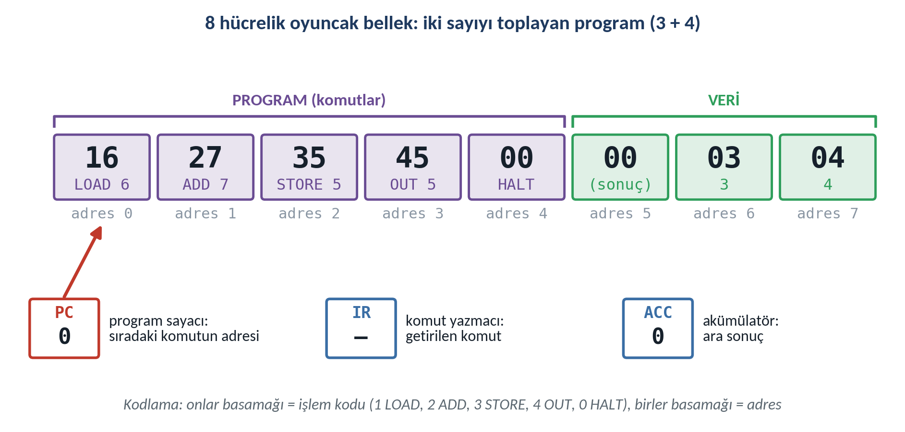
| Tur | PC | IR | Komut | Yürütme | ACC | bellek[5] | Çıktı |
|---|---|---|---|---|---|---|---|
| 1 | 0 → 1 | 16 | LOAD 6 | ACC ← bellek[6] | 3 | 0 | — |
| 2 | 1 → 2 | 27 | ADD 7 | ACC ← ACC + bellek[7] | 7 | 0 | — |
| 3 | 2 → 3 | 35 | STORE 5 | bellek[5] ← ACC | 7 | 7 | — |
| 4 | 3 → 4 | 45 | OUT 5 | ekrana bellek[5] | 7 | 7 | 7 |
| 5 | 4 → 5 | 00 | HALT | dur | 7 | 7 | — |
Üç gözlem: (1) PC komut getirilir getirilmez artar. (2) 4 ve 5 numaralı hücrelerin ikisi de 00 içerir; 4 komut olarak okunduğunda HALT, 5 veri olarak okunduğunda 0 anlamına gelir: depolanmış program kavramı. (3) Oyuncak bilgisayar yalnızca sırayla ilerleyebilir; “koşula göre atla” gibi komutları H2 ve H5'te göreceğiz. Simülasyondaki HALT unutulursa programını çalıştırıp veri hücresinin nasıl komut sanıldığını izleyin.
Bellek hiyerarşisi
İdeal bellek hem çok hızlı, hem çok büyük, hem de ucuz olurdu; üçü birden mümkün olmadığı için bilgisayarlar bir hiyerarşi kurar. Tepede CPU içindeki yazmaçlar tek bir saat çevriminde okunur; aşağı indikçe kapasite artar, hız ve bayt başına maliyet düşer. Kütüphane benzetmesiyle yazmaç elinizdeki not, önbellek masanızdaki kitaplar, RAM odadaki kitaplık, disk şehrin öbür ucundaki depodur.
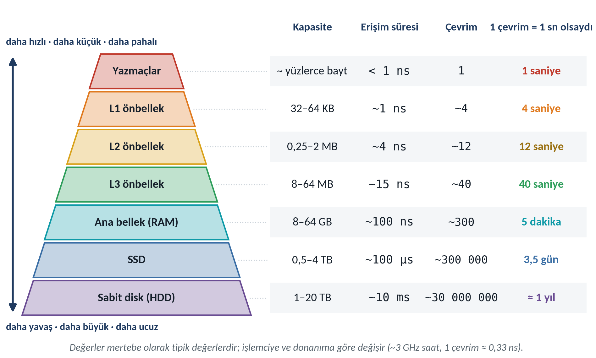
İkinci ayrım kalıcılıktır: Yazmaçlar, önbellekler ve RAM uçucudur (volatile), elektrik kesilince içerikleri kaybolur; SSD ve sabit disk kalıcıdır. Programlar diskte saklanır, çalıştırılacakları zaman RAM'e yüklenir (derleme hattının son aşaması: yükleyici).
Bit, bayt, ikili ve onaltılı
Transistör iki durumu güvenilir biçimde ayırt eder: iletir ya da iletmez. Bu yüzden en küçük bilgi birimi iki değer alan bittir (binary digit). Sekiz bit bir bayt eder; bellek bayt bayt adreslenir. n bitle 2 üzeri n farklı örüntü yazılır: 4 bitle 16, 8 bitle 256 (0–255).
Onluk tabanda 305 = 3·100 + 0·10 + 5·1'dir; ikili (binary) tabanda ağırlıklar 2'nin kuvvetleridir: 0010 1010₂ sayısında 1 olan bitlerin ağırlıkları 32, 8 ve 2'dir, toplam 42'dir.
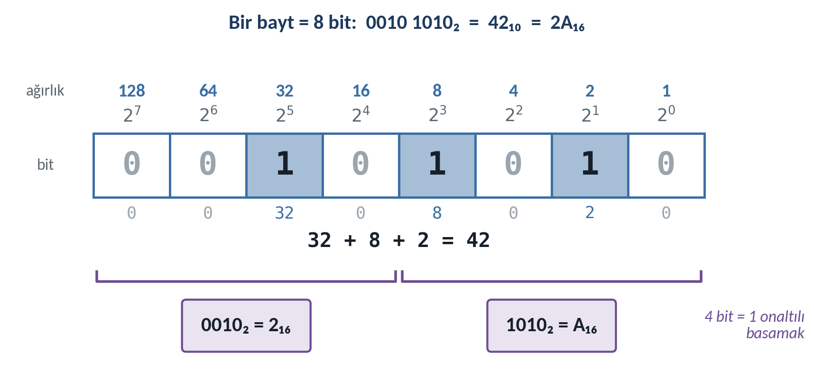
İkili sayılar uzun ve okunaksızdır. Onaltılı (hexadecimal) tabanda 16 = 2⁴ olduğu için her 4 bit (yarım bayt) tam bir onaltılı basamağa karşılık gelir; basamaklar 0–9 ve A–F (10–15) ile yazılır. C'de onaltılı sabitler 0x önekiyle yazılır: 0x2A. Aşağıdaki simülasyonda bitlere tıklayarak bu ilişkiyi deneyin; alt kısımdaki “Kendini sına” bölümü rastgele dönüşüm soruları üretir.
| Onluk | İkili | Onaltılı | Onluk | İkili | Onaltılı |
|---|---|---|---|---|---|
| 0 | 0000 | 0 | 8 | 1000 | 8 |
| 1 | 0001 | 1 | 9 | 1001 | 9 |
| 2 | 0010 | 2 | 10 | 1010 | A |
| 3 | 0011 | 3 | 11 | 1011 | B |
| 4 | 0100 | 4 | 12 | 1100 | C |
| 5 | 0101 | 5 | 13 | 1101 | D |
| 6 | 0110 | 6 | 14 | 1110 | E |
| 7 | 0111 | 7 | 15 | 1111 | F |
Dönüşüm yöntemleri
- İkiliden onluğa: 1 olan bitlerin ağırlıklarını toplayın:
1100 1000₂= 128 + 64 + 8 = 200. - Onluktan ikiliye: Sürekli 2'ye bölüp kalanları yazın, kalanları aşağıdan yukarıya okuyun: 42 → 21 (k 0) → 10 (k 1) → 5 (k 0) → 2 (k 1) → 1 (k 0) → 0 (k 1); yukarı doğru
101010₂. - İkili ↔ onaltılı: Bitleri sağdan dörderli gruplayıp tablodan çevirin:
1100 1000₂=C8₁₆. - Onaltılıdan onluğa: Basamakları 16'nın kuvvetleriyle çarpıp toplayın:
0x2A= 2·16 + 10 = 42;0xFF= 255.
Metin de sayıdır: ASCII ve UTF-8
ASCII tablosu 0–127 arasındaki sayıları harflere, rakamlara ve denetim karakterlerine eşler: 'A' = 65 = 0x41, 'a' = 97 = 0x61, '0' = 0x30, boşluk = 0x20, yeni satır (\n) = 0x0A. Büyük ve küçük harf yalnızca tek bir bitte (32 ağırlıklı bit, 0x20) farklıdır. Türkçe karakterler ASCII'de yoktur; yaygın UTF-8 kodlaması onları iki baytla gösterir. “Merhaba, Dünya!\n” 16 karakterdir ama 17 bayt tutar, çünkü 'ü' = C3 BC.
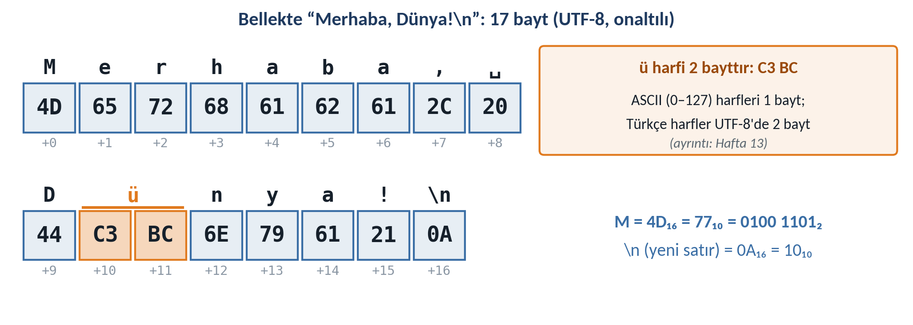
Makine dilinden C'ye
İşlemci yalnızca makine kodunu, yani ISA'nın tanımladığı bayt dizilerini yürütür. İlk bilgisayarlar bu sayılarla programlandı; sonra her komuta okunabilir bir ad verildi (mov, add, call). Bu adlarla yazılan dile assembly, onu makine koduna çeviren programa çevirici (assembler) denir; assembly işlemciye özgüdür. Yüksek düzeyli diller işlemciden bağımsızdır ve çeviriyi derleyiciye ya da yorumlayıcıya bırakır. Aşağıdaki şekil, bu makinede derlediğimiz printf satırının dört düzeydeki gerçek karşılığıdır.
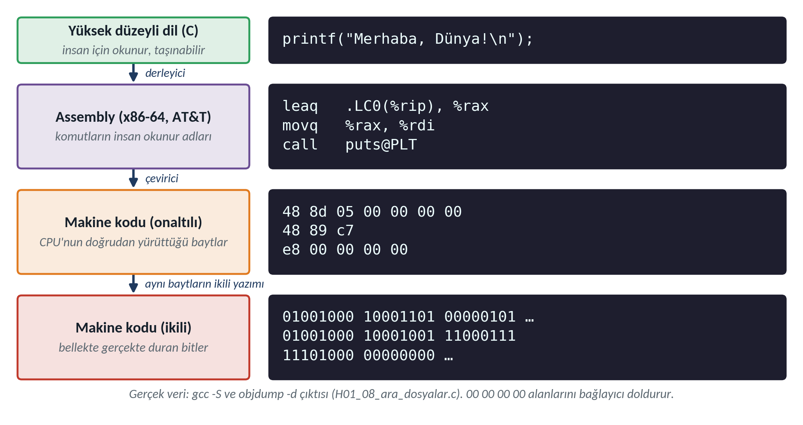
| Derlenen diller | Yorumlanan diller | |
|---|---|---|
| Örnekler | C, C++, Rust, Go | Python, JavaScript |
| Çeviri ne zaman? | Çalıştırmadan önce, bir kez | Çalışırken, her seferinde |
| Hız | Genellikle yüksek | Genellikle daha düşük |
| Hatalar | Pek çoğu derlerken yakalanır | Çoğu, o satır çalışınca görülür |
| Taşınabilirlik | Kaynak taşınır; çalıştırılabilir dosya yalnızca derlendiği platformda çalışır | Dosya, yorumlayıcının bulunduğu her yerde çalışır |
Java ara yol izler: Kod önce bayt koduna (bytecode) derlenir, bu kod bir sanal makinede (JVM) çalışır.
C'nin kısa tarihi
C, 1970'lerin başında Bell Laboratuvarları'nda Dennis Ritchie tarafından, Ken Thompson ile geliştirdikleri UNIX'i yazmak için tasarlandı; 1973'te UNIX çekirdeğinin büyük bölümü C ile yeniden yazıldı (Ritchie, 1993). 1978'de yayımlanan ve K&R diye anılan kitap uzun yıllar dilin fiilî tanımı oldu (ikinci baskı: Kernighan ve Ritchie, 1988). Dil 1989'da ANSI (C89), 1990'da ISO (C90) standardı oldu; ardından C99, C11, C17 ve C23 geldi. Bu derste C17 (ISO/IEC 9899:2018; ISO/IEC, 2018) kullanıyoruz; -std=c17 bayrağı bu yüzdendir.
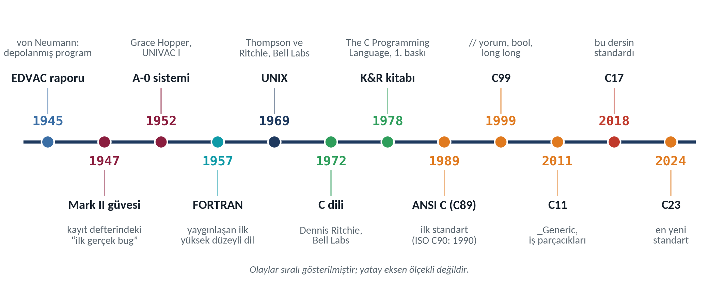
Linux çekirdeği, gömülü sistemler, aygıt sürücüleri, SQLite, Git ve Python yorumlayıcısı (CPython) büyük ölçüde C ile yazılmıştır; C++, Java, C# ve JavaScript'in sözdizimi de C'den türemiştir.
Derleme hattı
gcc merhaba.c -o merhaba tek bir işlem gibi görünür; oysa gcc bir sürücü (driver) programdır ve arka planda dört aşamayı sırayla çalıştırır, beşinci aşamayı (yükleme) işletim sistemi yapar. -save-temps bayrağı ara dosyaları saklar; şekildeki ve simülasyondaki boyutlar Örnek 8'de bu makinede ölçülmüştür.
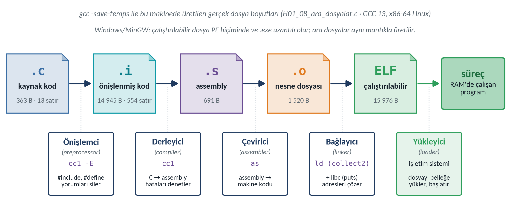
| Aşama | GCC aracı | Tek başına | Girdi → çıktı | Ne yapar? |
|---|---|---|---|---|
| Önişlemci (preprocessor) | cc1 -E | gcc -E x.c -o x.i | .c → .i | #include dosyalarını ekler, #define adlarını yerine koyar, yorumları siler. |
| Derleyici (compiler) | cc1 | gcc -S x.i | .i → .s | Dilin kurallarını denetler, hata ve uyarı üretir, C'yi assembly'ye çevirir. |
| Çevirici (assembler) | as | gcc -c x.s | .s → .o | Makine koduna çevirir; başka dosyadaki adlar (puts) için yer boş kalır. |
| Bağlayıcı (linker) | ld (collect2) | gcc x.o -o x | .o + libc → ELF/EXE | Dosyaları ve kütüphaneleri birleştirir, boş adresleri doldurur. |
| Yükleyici (loader) | işletim sistemi | ./x | dosya → süreç | Belleğe yükler, libc'yi bağlar, başlangıç kodunu ve main'i çalıştırır. |
İlk C programının anatomisi
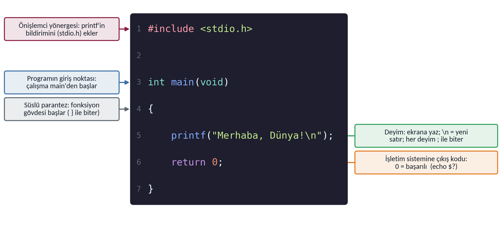
#include <stdio.h>bir önişlemci yönergesidir (#ile başlar,;ile bitmez): Standart giriş/çıkış başlık dosyasını ekler; içindeprintf'in bildirimi (declaration) vardır.printf'in makine kodu ise libc'dedir ve bağlayıcı ekler.int main(void)programın giriş noktasıdır.int,main'in işletim sistemine bir tamsayı döndüreceğini;void, parametre almadığını söyler. C büyük–küçük harfe duyarlıdır:Mainbaşka bir addır.{ }fonksiyonun gövdesidir. K&R biçimini izliyoruz: Fonksiyonun açılış parantezi ayrı satırda, gövde dört boşluk içeride.printf("…\n");bir deyimdir (statement) ve;ile biter. Tırnak içi bir karakter dizisi sabitidir (string literal);\ntek bir karakteri (yeni satır) gösteren bir kaçış dizisidir (escape sequence).return 0;işletim sistemine çıkış kodu (exit status) olarak 0 döndürür: 0 “başarılı”, 0 dışı “bir sorun oldu” demektir.
| Yazım | Anlamı | Örnek | Ekranda |
|---|---|---|---|
\n · \t | yeni satır · sekme (sonraki sekme durağına atla) | printf("A\tB\n"); | A B |
\" · \\ | çift tırnak · ters eğik çizgi | printf("\"C:\\h01\""); | "C:\h01" |
\' | tek tırnak (karakter sabitlerinde, H3) | '\'' | ' |
%% | yüzde (printf kuralı; kaçış dizisi değil) | printf("%%100"); | %100 |
Geliştirme ortamı
Bu derste derleyici olarak GCC, düzenleyici olarak Microsoft'un C/C++ eklentisiyle VS Code öneriyoruz. Aşağıdaki rehberde işletim sisteminizi seçin; her komutun yanındaki Kopyala düğmesi komutu panoya alır. İlk haftalarda derlemeyi düzenleyicinin “Çalıştır” düğmesiyle değil, tümleşik terminalde elle yapın: Her aşamada ne olduğunu görmek istiyoruz.
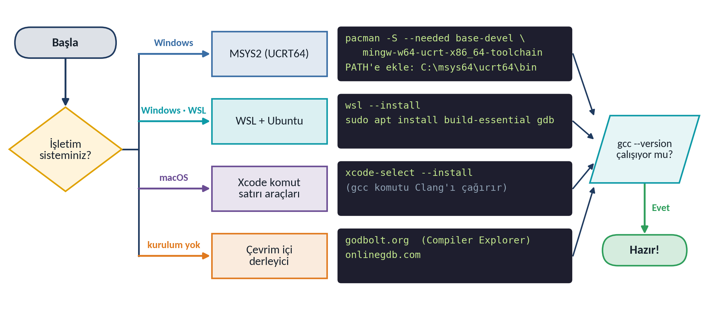
| Bayrak | Anlamı |
|---|---|
-std=c17 -pedantic | C17 standardına göre derle; standarda aykırı her yazımda uyar. |
-Wall -Wextra | Olası hatalara karşı uyarıları aç. Ders örneklerinin hiçbiri uyarı üretmez. |
-o ad · -g | Çıktı dosyasının adı (verilmezse a.out / a.exe) · hata ayıklayıcı bilgisi (H6). |
-E · -S · -c | Hattı önişlemci / derleyici / çeviriciden sonra durdur (.i / .s / .o). |
-save-temps · -O0/-O2 | Ara dosyaları sakla · eniyileme (optimizasyon) düzeyi (Örnek 9). |
Örnek merdiveni
Dokuz örnek bir merdiven oluşturur; her basamak bir öncekine tek bir yeni öge ekler: program iskeleti (1), kaçış dizileri (2), hizalama (3), %d (4), derleyici iletisi (5), derleyici–bağlayıcı ayrımı (6), çıkış kodu (7), ara dosyalar (8) ve eniyileme (9). ★ basamaklar çekirdektir, ★★ derinleştirir, ★★★ isteğe bağlıdır. Her örnekte önce çıktıyı tahmin edin, sonra Çıktıyı göster düğmesiyle karşılaştırın. Çıktılar bu makinede alınmış gerçek çıktılardır; kodların tamamı sayfa sonundaki ZIP dosyasındadır.
Örnek 1 ★ · Merhaba, Dünya!
Problem. Ekrana “Merhaba, Dünya!” yazan ve başarıyla bittiğini bildiren en kısa C programını yazın, derleyin, çalıştırın. İlk üç satır bir yorumdur (comment): /* ile */ arası derleyicice yok sayılır; ders kodlarının hepsinde dosya adı, derleme komutu ve beklenen çıktı buradadır.
/* H01_01_merhaba_dunya.c · Hafta 1 · Örnek 1: İlk C programı
* Derle: gcc -std=c17 -Wall -Wextra -pedantic H01_01_merhaba_dunya.c -o merhaba
* Çıktı: Merhaba, Dünya! */
#include <stdio.h>
int main(void)
{
printf("Merhaba, Dünya!\n");
return 0;
}$ gcc -std=c17 -Wall -Wextra -pedantic H01_01_merhaba_dunya.c -o merhaba $ ./merhaba Merhaba, Dünya!
./ “bu klasördeki” demektir; Windows'ta merhaba.exe ya da yalnızca merhaba yazılır. Değiştir: \n'yi silin; kabuk istemi nereye yazılıyor?Örnek 2 ★ · Çok satırlı çıktı ve kaçış dizileri
Problem. Küçük bir tablo, tırnak içinde bir metin, bir Windows klasör yolu ve bir yüzde değeri yazdırın. Yeni öge: kaçış dizileri.
/* H01_02_kacis_dizileri.c · Hafta 1 · Örnek 2: Kaçış dizileri ve %%
* Derle: gcc -std=c17 -Wall -Wextra -pedantic H01_02_kacis_dizileri.c -o kacis
* Çıktı: ciktilar/H01_02_kacis_dizileri.txt */
#include <stdio.h>
int main(void)
{
printf("Hafta\tKonu\n"); /* \t : sekme */
printf("1\tBilgisayar ve program\n");
printf("2\tAlgoritmik düşünme\n\n"); /* \n\n : boş satır */
printf("Tırnak: \"C dili\"\n"); /* \" : çift tırnak */
printf("Yol : C:\\kodlar\\h01\n"); /* \\ : ters çizgi */
printf("Oran : %%100\n"); /* %% : printf kuralı */
return 0;
}$ gcc -std=c17 -Wall -Wextra -pedantic H01_02_kacis_dizileri.c -o kacis $ ./kacis Hafta Konu 1 Bilgisayar ve program 2 Algoritmik düşünme Tırnak: "C dili" Yol : C:\kodlar\h01 Oran : %100
\t sabit sayıda boşluk eklemez, imleci bir sonraki sekme durağına (8 sütunun katları) taşır; bu yüzden “Konu” sütunu hizalı başlar. \n\n bir boş satır bırakır. %% bir kaçış dizisi değil, printf'in kuralıdır. Değiştir: “Hafta” yerine “Hafta no” yazın; hizalama neden bozuldu?Örnek 3 ★ · ASCII sanatıyla isim kartı
Problem. Ders adını, haftayı, öğrencinin adını ve bölümünü içeren, kenarları çizgili bir isim kartı yazdırın; bütün satırlar aynı genişlikte olmalı. Yeni öge: çıktı düzeni ve hizalama.
/* H01_03_isim_karti.c · Hafta 1 · Örnek 3: ASCII sanatıyla isim kartı
* Derle: gcc -std=c17 -Wall -Wextra -pedantic H01_03_isim_karti.c -o kart
* Çıktı: ciktilar/H01_03_isim_karti.txt */
#include <stdio.h>
int main(void)
{
printf("+==========================================+\n");
printf("| ____ |\n");
printf("| / ___| Algoritma ve Programlama - I |\n");
printf("| | | Hafta 1 · İlk C programım |\n");
printf("| | |___ |\n");
printf("| \\____| Öğrenci : Ada Yılmaz |\n");
printf("| Bölüm : Bilgisayar Müh. |\n");
printf("+==========================================+\n");
return 0;
}$ gcc -std=c17 -Wall -Wextra -pedantic H01_03_isim_karti.c -o kart $ ./kart +==========================================+ | ____ | | / ___| Algoritma ve Programlama - I | | | | Hafta 1 · İlk C programım | | | |___ | | \____| Öğrenci : Ada Yılmaz | | Bölüm : Bilgisayar Müh. | +==========================================+
\\____|, ekranda \____| görünür: Ters eğik çizgi kaynakta iki kez yazılır. “Öğrenci” UTF-8'de 9 bayt tutar ama 7 sütun kaplar (Ö ve ğ ikişer bayttır); hizalama bayta değil, görünen karaktere göre yapılır.Örnek 4 ★ · printf ile ilk hesaplama
Problem. Bir ifadeyi metin olarak yazdırmak ile değerini hesaplatıp yazdırmak arasındaki farkı gösterin; bir günde kaç saniye olduğunu hesaplayın. Yeni öge: %d biçim belirteci (ayrıntısı H3'te).
/* H01_04_ilk_hesaplama.c · Hafta 1 · Örnek 4: %d belirtecine ilk bakış
* Derle: gcc -std=c17 -Wall -Wextra -pedantic H01_04_ilk_hesaplama.c -o hesap
* Çıktı: ciktilar/H01_04_ilk_hesaplama.txt */
#include <stdio.h>
int main(void)
{
printf("3 + 4\n"); /* metin: olduğu gibi yazılır */
printf("%d\n", 3 + 4); /* ifade: önce hesaplanır */
printf("%d + %d = %d\n", 12, 30, 12 + 30);
printf("Bir günde %d saniye var.\n", 24 * 60 * 60);
return 0;
}$ gcc -std=c17 -Wall -Wextra -pedantic H01_04_ilk_hesaplama.c -o hesap $ ./hesap 3 + 4 7 12 + 30 = 42 Bir günde 86400 saniye var.
printf'in ilk argümanı bir biçim dizisidir (format string): Sıradan karakterler olduğu gibi yazılır; %d ise “buraya, virgülden sonraki tamsayının onluk değerini koy” demektir. İlk satırda 3 + 4 tırnak içindedir, yani metindir; ikincide önce hesaplanır, sonuç (7) %d'nin yerine yazılır.Örnek 5 ★ · Noktalı virgülü eksik program
Problem. Aşağıdaki program derlenmiyor; iletiyi okuyarak hatanın yerini ve nedenini bulun. Yeni öge: derleyici hata iletisinin yapısı. (Kasıtlı olarak hatalı Hata Avcısı dosyaları kodlar/hatali/ altındadır; iletilerdeki satır numaraları değişmesin diye “BU DOSYA KASITLI HATA İÇERİR” işareti dosyanın sonundaki yorumdadır.)
#include <stdio.h>
int main(void)
{
printf("Merhaba, Dünya!\n")
return 0;
}
/* BU DOSYA KASITLI HATA İÇERİR.
* Hata Avcısı (Örnek 5): printf satırında ; eksik. */$ gcc -std=c17 -Wall -Wextra -pedantic H01_05_noktali_virgul.c -o program
H01_05_noktali_virgul.c: In function 'main':
H01_05_noktali_virgul.c:5:32: error: expected ';' before 'return'
5 | printf("Merhaba, Dünya!\n")
| ^
| ;
6 | return 0;
| ~~~~~~
$ echo $?
1dosya:satır:sütun: tür: açıklama. “5. satırın 32. sütununda, return'den önce ; bekleniyordu.” error türü derlemenin durduğunu, programın üretilmediğini gösterir (gcc'nin çıkış kodu 1).Derleyici eksikliği bir sonraki sözcüğü (return) görünce fark eder; bu yüzden iletideki satırda hata göremiyorsanız bir önceki satıra bakın. Kapanış } unutulursa (hatali/H01_05b_suslu_parantez.c) eksiklik ancak dosya sonunda anlaşılır: H01_05b_suslu_parantez.c:6:5: error: expected declaration or statement at end of input.
Örnek 6 ★★ · Derleyici mi, bağlayıcı mı? (amiral örnek)
1. Problem. İki arkadaşınız “Merhaba” programını derleyemiyor: Biri printf yerine prinft, öteki main yerine Main yazmış. Her programın hangi aşamada ve neden başarısız olduğunu belirleyin; hataları sınıflandırmak için genel bir yöntem geliştirin.
- Hatalı
.cdosyası - GCC 13 (
-std=c17 -Wall -Wextra -pedantic)
- Derleme ile bağlamayı ayrı çalıştır (
-c, sonra bağla) - Her aşamanın iletisini ve çıkış kodunu incele;
nmile adlara bak
- Hatanın aşaması: derleyici / bağlayıcı / çalışma
- Neden ve düzeltme
3. Algoritma. (1) gcc -c dosya.c ile yalnızca derle; ileti error içeriyorsa hata derleyicidedir. (2) Derleme başarılıysa (uyarı olsa bile) gcc dosya.o -o program ile bağla; undefined reference ile başarısız olursa hata bağlayıcıdadır. (3) O da başarılıysa çalıştır; yanlış davranış çalışma zamanına ya da mantığa aittir.
4. Kod ve tek adımda derleme. prinft dosyası ve öğrencinin gördüğü ileti:
#include <stdio.h>
int main(void)
{
prinft("Merhaba, Dünya!\n");
return 0;
}
/* BU DOSYA KASITLI HATA İÇERİR.
* Hata Avcısı (Örnek 6): printf yerine prinft. */$ gcc -std=c17 -Wall -Wextra -pedantic H01_06a_prinft.c -o program
H01_06a_prinft.c: In function 'main':
H01_06a_prinft.c:5:5: warning: implicit declaration of function 'prinft'; did you mean 'printf'? [-Wimplicit-function-declaration]
5 | prinft("Merhaba, Dünya!\n");
| ^~~~~~
| printf
/usr/bin/ld: /tmp/ccXXXXXX.o: in function `main':
H01_06a_prinft.c:(.text+0x18): undefined reference to `prinft'
collect2: error: ld returned 1 exit status
$ echo $?
1prinft'in bildirimi görülmemiştir; derleyici “belki printf?” der ama devam eder. /usr/bin/ld: ile başlayan satırlar bağlayıcıdandır: prinft libc dahil hiçbir yerde bulunamaz, tanımsız başvuru (undefined reference) hatası verilir.5. İzleme. Algoritmayı adım adım uygulayalım. nm bir nesne dosyasındaki adları listeler: T bu dosyada tanımlı, U başka yerde aranacak tanımsız addır.
$ gcc -std=c17 -Wall -Wextra -pedantic -c H01_06a_prinft.c
(yukarıdaki uyarı; H01_06a_prinft.o üretildi, çıkış kodu 0)
$ nm H01_06a_prinft.o
0000000000000000 T main
U prinft
$ gcc H01_06a_prinft.o -o program
/usr/bin/ld: H01_06a_prinft.o: in function `main':
H01_06a_prinft.c:(.text+0x18): undefined reference to `prinft'
collect2: error: ld returned 1 exit status| Dosya | 1) gcc -c | nm | 2) bağlama | Sonuç |
|---|---|---|---|---|
| H01_06a_prinft.c | uyarı; .o üretildi | T main · U prinft | undefined reference to ‘prinft’ | bağlayıcı hatası |
| H01_06b_main_buyuk_harf.c | sorunsuz; .o üretildi | T Main · U printf | undefined reference to ‘main’ | bağlayıcı hatası |
| H01_01_merhaba_dunya.c | sorunsuz | T main · U puts | başarılı | çalışır |
#include <stdio.h>
int Main(void)
{
printf("Merhaba, Dünya!\n");
return 0;
}
/* BU DOSYA KASITLI HATA İÇERİR.
* Hata Avcısı (Örnek 6): main yerine Main. */$ gcc -std=c17 -Wall -Wextra -pedantic H01_06b_main_buyuk_harf.c -o program /usr/bin/ld: /usr/lib/gcc/x86_64-linux-gnu/13/../../../x86_64-linux-gnu/Scrt1.o: in function `_start': (.text+0x1b): undefined reference to `main' collect2: error: ld returned 1 exit status $ echo $? 1
Main geçerli bir addır. Ama bağlayıcı her C programının başına eklediği başlangıç kodunu (Scrt1.o içindeki _start) bağlarken main'i arar ve bulamaz: (.text+0x1b): undefined reference to ‘main'.6. Test tablosu. Yöntemi haftanın bütün hatalı dosyalarına uygulayalım (“gerçek” sütunu bu makinede alınmıştır).
| Dosya | Hata | Beklenen | Gerçek (GCC 13) |
|---|---|---|---|
| H01_05_noktali_virgul.c | ; eksik | derleyici | error; program üretilmedi |
| H01_05b_suslu_parantez.c | } eksik | derleyici | error: … at end of input |
| H01_06a_prinft.c | yazım | uyarı + bağlayıcı | warning + undefined reference |
| H01_06b_main_buyuk_harf.c | Main | bağlayıcı | undefined reference to ‘main’ |
| H01_06c_include_eksik.c | #include yok | uyarı | 2 uyarı; program üretildi, çalıştı |
int main(void)
{
printf("Merhaba, Dünya!\n");
return 0;
}
/* BU DOSYA KASITLI HATA İÇERİR.
* Hata Avcısı (Örnek 6): #include <stdio.h> yok. */$ gcc -std=c17 -Wall -Wextra -pedantic H01_06c_include_eksik.c -o program
H01_06c_include_eksik.c: In function 'main':
H01_06c_include_eksik.c:3:5: warning: implicit declaration of function 'printf' [-Wimplicit-function-declaration]
3 | printf("Merhaba, Dünya!\n");
| ^~~~~~
H01_06c_include_eksik.c:1:1: note: include '<stdio.h>' or provide a declaration of 'printf'
+++ |+#include <stdio.h>
1 | int main(void)
H01_06c_include_eksik.c:3:5: warning: incompatible implicit declaration of built-in function 'printf' [-Wbuiltin-declaration-mismatch]
3 | printf("Merhaba, Dünya!\n");
| ^~~~~~
H01_06c_include_eksik.c:3:5: note: include '<stdio.h>' or provide a declaration of 'printf'
$ echo $?
0
$ ./program
Merhaba, Dünya!#include <stdio.h> unutulunca GCC 13 yalnızca uyarır, program oluşur ve doğru çalışıyormuş gibi görünür. Derleyici printf'in nasıl çağrılacağını tahmin etmiştir; bu tahmin başka fonksiyonlarda yanlış olabilir. Uyarıları görmezden gelmemenin nedeni budur.7. Değiştir–genişlet. (a) prinft'i düzeltip nm çıktısını yeniden alın: printf yerine neden puts görünüyor? (Yanıt Örnek 8'de.) (b) Hem ; eksik hem Main hatalı bir programda kaç ileti görürsünüz? Önce tahmin edin: Derleyici hatası varken bağlayıcı hiç çalışmaz.
Örnek 7 ★★ · Çıkış kodu
Problem. main'in döndürdüğü değerin nereye gittiğini gösterin. Yeni öge: çıkış kodunun kabukta gözlenmesi.
/* H01_07_cikis_kodu.c · Hafta 1 · Örnek 7: Çıkış kodu (echo $?)
* Derle: gcc -std=c17 -Wall -Wextra -pedantic H01_07_cikis_kodu.c -o cikis
* Çıktı: ekrana ileti; çıkış kodu 3 */
#include <stdio.h>
int main(void)
{
printf("Program çalıştı; işletim sistemine 3 döndürüyor.\n");
return 3; /* 0: başarılı, 0 dışı: bir sorun oldu */
}$ gcc -std=c17 -Wall -Wextra -pedantic H01_07_cikis_kodu.c -o cikis $ ./cikis Program çalıştı; işletim sistemine 3 döndürüyor. $ echo $? 3 $ ./cikis > /dev/null && echo "başarılı" || echo "başarısız" başarısız
echo $? son programın çıkış kodunu sorar: 3. &&'den sonraki komut yalnızca önceki program 0 döndürürse, ||'dan sonraki 0 dışı bir değerde çalışır; derleme betikleri ve testler başarıyı bu değerden anlar. Windows komut isteminde echo %errorlevel%, PowerShell'de $LASTEXITCODE kullanılır.Örnek 8 ★★ · gcc -save-temps ile ara dosyalar (amiral örnek)
1. Problem. “Merhaba” programının derleme hattındaki yolculuğunu belgeleyin: Her aşamanın dosyasını saklayın, boyutunu ölçün, içeriğinden Büyük Soru'ya kanıt olacak bir kesit seçin.
H01_08_ara_dosyalar.c(363 bayt)- GCC 13, x86-64 Linux
- Önişle, derle, çevir:
-save-temps -c; sonra bağla - Boyut (
ls -l), satır (wc -l), tür (file) ölç - Kesit al (
tail,objdump,nm)
- .i, .s, .o ve çalıştırılabilir dosya
- Aşama başına boyut ve gözlem tablosu
3. Algoritma. (1) -save-temps -c ile derle (önişlemci, derleyici ve çevirici çıktıları kalır). (2) Nesne dosyasını ayrıca bağla. (3) Boyut, satır ve tür ölç. (4) Her dosyadan bir kesit alıp bir önceki aşamayla karşılaştır. İki adımda derliyoruz, çünkü GCC 11 ve sonrası tek adımlı -save-temps -o ad kullanımında ara dosyalara önek ekler (bu makinede ara_dosyalar-H01_08_ara_dosyalar.i). 4. Kod. Önişlemcinin işini görmek için bir #define ekledik (sabitler H3'te):
/* H01_08_ara_dosyalar.c · Hafta 1 · Örnek 8: .i, .s ve .o ara dosyaları
* Derle: gcc -std=c17 -Wall -Wextra -pedantic -save-temps -c \
* H01_08_ara_dosyalar.c
* Çıktı: Merhaba, Dünya! */
#include <stdio.h>
#define MESAJ "Merhaba, Dünya!\n" /* önişlemci MESAJ'ı metinle değiştirir */
int main(void)
{
printf(MESAJ);
return 0;
}$ gcc -std=c17 -Wall -Wextra -pedantic -save-temps -c H01_08_ara_dosyalar.c
$ gcc H01_08_ara_dosyalar.o -o ara_dosyalar
$ ls -l H01_08_ara_dosyalar.* ara_dosyalar | awk '{print $5, $9}'
363 H01_08_ara_dosyalar.c
14945 H01_08_ara_dosyalar.i
1520 H01_08_ara_dosyalar.o
691 H01_08_ara_dosyalar.s
15976 ara_dosyalar
$ wc -l H01_08_ara_dosyalar.c H01_08_ara_dosyalar.i | head -2
13 H01_08_ara_dosyalar.c
554 H01_08_ara_dosyalar.i
$ tail -6 H01_08_ara_dosyalar.i
# 9 "H01_08_ara_dosyalar.c"
int main(void)
{
printf("Merhaba, Dünya!\n");
return 0;
}
$ file H01_08_ara_dosyalar.o ara_dosyalar | cut -c1-95
H01_08_ara_dosyalar.o: ELF 64-bit LSB relocatable, x86-64, version 1 (SYSV), not stripped
ara_dosyalar: ELF 64-bit LSB pie executable, x86-64, version 1 (SYSV), dynamically lin
$ ./ara_dosyalar
Merhaba, Dünya!#define MESAJ "…" önişlemciye “MESAJ'ı gördüğün her yere bu metni koy” der; derleyici MESAJ adını hiç görmeyecektir. Çıktıdaki tail -6 kesitinde yorumların silindiği ve MESAJ'ın metinle değiştiği görülür.| Aşama | Dosya | Boyut (B) | Gözlem |
|---|---|---|---|
| kaynak | .c | 363 | 13 satır; yorum ve #define içerir |
| önişlemci | .i | 14 945 | 554 satır; stdio.h eklendi, yorumlar silindi, MESAJ yerine metin kondu |
| derleyici | .s | 691 | x86-64 assembly; printf yerine puts çağrısı |
| çevirici | .o | 1 520 | makine kodu; puts'un adresi henüz 00 00 00 00 |
| bağlayıcı | ara_dosyalar | 15 976 | ELF çalıştırılabilir; puts adresi dolduruldu |
En şaşırtıcı satır ikincisidir: 13 satırlık kaynak, önişlemciden 554 satır olarak çıkar, çünkü önişlemci stdio.h'nin ve onun içerdiği başlık dosyalarının bütün metnini eklemiştir (printf'in bildirimi .i dosyasının 366. satırındadır). Derleyicinin ürettiği assembly'nin özü (.cfi_ yönergeleri çıkarılmıştır):
.LC0: .string "Merhaba, D\303\274nya!" main: endbr64 pushq %rbp movq %rsp, %rbp leaq .LC0(%rip), %rax movq %rax, %rdi call puts@PLT movl $0, %eax popq %rbp ret
H01_08_ara_dosyalar.s (kesit). Metin salt okunur veri bölümüne konmuştur; 'ü' \303\274 biçimindedir (C3 BC baytlarının sekizli yazımı). Kodda printf değil puts çağrılır: Biçim belirteci içermeyen ve \n ile biten bir printf'i GCC, eniyileme kapalıyken bile daha basit olan puts'a çevirir; \n'nin metinden kaybolması bu yüzdendir (puts satır sonunu kendisi ekler).$ objdump -d -r H01_08_ara_dosyalar.o (kesit) 0000000000000000 <main>: 8: 48 8d 05 00 00 00 00 lea 0x0(%rip),%rax # f <main+0xf> b: R_X86_64_PC32 .rodata-0x4 12: e8 00 00 00 00 call 17 <main+0x17> 13: R_X86_64_PLT32 puts-0x4
call komutunun (e8) ardındaki dört bayt 00 00 00 00'dır ve R_X86_64_PLT32 puts kaydı bağlayıcıya “burayı doldur” der. Bağlanmış dosyada aynı komut gerçek bir adrese gider: 115b: call 1050 <puts@plt>.Yolculuğun kütüphanedeki son adımı çekirdeğe yapılan sistem çağrısıdır; strace bunu gösterir:
$ strace -e trace=write ./ara_dosyalar write(1, "Merhaba, D\303\274nya!\n", 17) = 17 +++ exited with 0 +++
write sistem çağrısı yapar: dosya tanımlayıcı 1 (standart çıktı), 17 bayt. Gerisi işletim sisteminin, terminalin ve ekran kartının işidir.9. Değiştir–genişlet. (a) #include'u silip .i boyutunu yeniden ölçün. (b) printf("%s", MESAJ) yazın: .s'de hâlâ puts var mı? (c) Ölçümleri kendi bilgisayarınızda tekrarlayın; Windows'ta dosya boyutu ve file çıktısı nasıl değişiyor?
Örnek 9 ★★★ · -O0 ile -O2 (Merak)
Problem. Aynı C programı farklı eniyileme düzeylerinde farklı makine kodlarına dönüşebilir mi? (Değişkenler H3'te; int a = 3; satırını “a adlı kutuya 3 koy” diye okuyun.)
/* H01_09_optimizasyon.c · Hafta 1 · Örnek 9 (Merak): -O0 / -O2 karşılaştırması
* Derle: gcc -std=c17 -Wall -Wextra -pedantic -S -O0 \
* H01_09_optimizasyon.c
* Çıktı: Toplam: 7 */
#include <stdio.h>
int main(void)
{
int a = 3;
int b = 4;
int toplam = a + b;
printf("Toplam: %d\n", toplam);
return 0;
}$ gcc -std=c17 -Wall -Wextra -pedantic H01_09_optimizasyon.c -o optimizasyon $ ./optimizasyon Toplam: 7
$ gcc -std=c17 -Wall -Wextra -pedantic -O0 -S -fno-asynchronous-unwind-tables H01_09_optimizasyon.c -o opt_O0.s $ gcc -std=c17 -Wall -Wextra -pedantic -O2 -S -fno-asynchronous-unwind-tables H01_09_optimizasyon.c -o opt_O2.s
opt_O0.s ve opt_O2.s dosyalarındadır. -fno-asynchronous-unwind-tables yalnızca .cfi_ yönergelerini gizler.| -O0 (19 komut) | -O2 (10 komut) |
|---|---|
main: endbr64 pushq %rbp movq %rsp, %rbp subq $16, %rsp movl $3, -12(%rbp) movl $4, -8(%rbp) movl -12(%rbp), %edx movl -8(%rbp), %eax addl %edx, %eax movl %eax, -4(%rbp) movl -4(%rbp), %eax movl %eax, %esi leaq .LC0(%rip), %rax movq %rax, %rdi movl $0, %eax call printf@PLT movl $0, %eax leave ret | main: endbr64 subq $8, %rsp movl $7, %edx movl $2, %edi xorl %eax, %eax leaq .LC0(%rip), %rsi call __printf_chk@PLT xorl %eax, %eax addq $8, %rsp ret |
-O0 C kodunu neredeyse satır satır izler: 3 ve 4 bellekteki iki yere (-12(%rbp), -8(%rbp)) yazılır, yazmaçlara okunur, addl ile toplanır, sonuç yine belleğe yazılıp okunur. -O2'de toplama yoktur: Derleyici 3 + 4'ü derleme sırasında hesaplayıp doğrudan movl $7, %edx yazmıştır (sabit katlama, constant folding). endbr64, Ubuntu GCC'sinin varsayılan eklediği bir güvenlik komutudur (Intel CET); -O2'deki __printf_chk da Ubuntu'nun eniyileme açıkken _FORTIFY_SOURCE denetimlerini etkinleştirmesindendir.
Hata Avcısı
Haftanın hataları üç gruba ayrılır: derleyici hataları (kod dilin kurallarına uymuyor), bağlayıcı hataları (kurallara uyuyor ama bir ad bulunamıyor) ve ortam sorunları (program doğru, çevresi yanlış ayarlı).
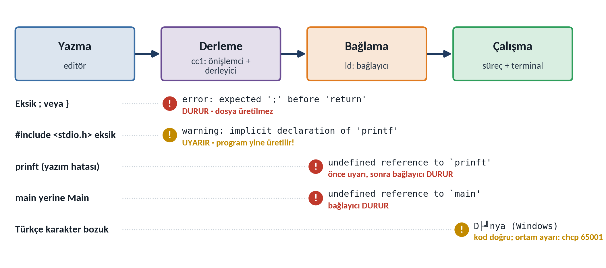
| Hata | İleti (GCC 13) | Neden | Çözüm |
|---|---|---|---|
Eksik ; / } | expected ';' before 'return' · expected declaration or statement at end of input | Deyim ya da blok kapanmamış; derleyici bunu sonraki sözcükte ya da dosya sonunda fark eder. | İletideki satırın bir öncesine de bakın; parantezleri eşleştirin. |
#include yok | warning: implicit declaration of function 'printf' | printf'in bildirimi görülmedi; çağrı tahmin edildi. | #include <stdio.h> ekleyin; uyarıyı yok saymayın (GCC 14'te hata). |
prinft | uyarı + “undefined reference to ‘prinft’” | Böyle bir fonksiyon yok; bağlayıcı bulamadı. | “did you mean” önerisine bakıp yazımı düzeltin. |
Main | “undefined reference to ‘main’” (MinGW: ‘WinMain’) | C harf duyarlı; başlangıç kodu main'i arıyor. | int main(void) yazın. |
| Bozuk Türkçe | (ileti yok) ekranda Merhaba, D├╝nya! | UTF-8 baytları 857 kod sayfasıyla okunuyor. | chcp 65001; dosyayı UTF-8 kaydedin. |
Mühendis gözüyle
Mini-OBS projesi: v0.1
Dönem boyunca her hafta yalnızca o haftanın kavramlarıyla büyüyen tek bir uygulama geliştireceğiz: Mini-OBS (Öğrenci Not Yönetim Sistemi); v0.3'ten itibaren program başlığı “MİNİ-OBS v0.N · Öğrenci Not Sistemi” biçimindedir. Dönem sonunda (v1.0) öğrenci kayıtlarını yapılarda tutan, notları hesaplayıp istatistik çıkaran, verisini dosyada saklayan, menü güdümlü ve çok dosyalı bir program olacak. Duraklar: v0.3 (H3) tek öğrenci, v0.7 (H7) menü döngüsü, v0.10 (H10) diziler, v1.0 (H14) yapılar ve dosyalar.
+================================================+ | __ __ _ _ ___ ____ ____ | | | \/ (_)_ __ (_) / _ \| __ )/ ___| | | | |\/| | | '_ \| |_____| | | | _ \\___ \ | | | | | | | | | | |_____| |_| | |_) |___) | | | |_| |_|_|_| |_|_| \___/|____/|____/ | | | | MİNİ-OBS v0.1 · Öğrenci Not Sistemi | | RTEÜ Bilgisayar Mühendisliği · AP-1 | +================================================+ ANA MENÜ -------------------------------- [1] Öğrenci ekle [2] Öğrencileri listele [3] Not gir [4] İstatistikler [0] Çıkış -------------------------------- Seçiminiz: _
| Test | Komut | Beklenen |
|---|---|---|
| T1 Derleme | gcc -std=c17 -Wall -Wextra -pedantic mini_obs_v0_1.c -o mini_obs | hiçbir ileti yok |
| T2 Görünüm | ./mini_obs | kutu ve en az beş seçenekli menü; sağ kenar hizalı; “Seçiminiz” satırı |
| T3 Çıkış kodu | ./mini_obs > /dev/null; echo $? | 0 |
| T4 Windows | chcp 65001 sonra mini_obs.exe | Türkçe karakterler doğru |
AP-2 köprüsü
Kendini sına
On soru; her sorunun ardından doğru yanıt ve kısa bir açıklama görünür.
Derleme hattında .o dosyasını (kütüphanelerle birleştirerek) çalıştırılabilir dosyaya çeviren aşama hangisidir?
- Önişlemci
- Derleyici
- Çevirici
- Bağlayıcı (linker)
puts gibi adların boş bırakılmış adreslerini doldurur. Çevirici .s'den .o'yu üretir.0x2A onaltılı sayısının onluk karşılığı nedir?
- 24
- 32
- 42
- 210
0010 1010'dır: her onaltılı basamak 4 bittir.Derleyici hiçbir ileti vermedi ama ardından “undefined reference to ‘main’” iletisi geldi. Hata hangi aşamadadır?
- Bağlama
- Önişleme
- Derleme
- Çalışma zamanı
/usr/bin/ld:, collect2). Örneğin main yerine Main yazılmıştır; derleyici için bu geçerli bir addır, ama başlangıç kodu main'i arar.1011₂ ikili sayısının onluk karşılığı nedir?
- 13
- 11
- 9
- 1011
Program sayacı (PC) ne tutar?
- Son işlemin sonucunu
- İşlemcinin saat hızını
- Sıradaki komutun bellek adresini
- O ana kadar yürütülen komut sayısını
Aşağıdaki satır ne yazdırır?
printf("A\tB\\n");- Derleme hatası verir
A, sekme,Bve ardından yeni satıra geçilir- Tam olarak
A\tB\nyazar; hiçbir kaçış dizisi işlenmez A, sekme,B, ardından iki karakter\ven; yeni satıra geçilmez
\t bir sekmedir; \\ ise tek bir ters eğik çizgi yazdırır, ardından gelen n sıradan bir harftir. Satır sonu olmadığı için kabuk istemi aynı satırda başlar.return 3; ile biten bir program çalıştırıldıktan hemen sonra Linux'ta echo $? ne yazdırır?
- 0
- 3
- 1
- Hiçbir şey yazdırmaz
$? son programın çıkış kodudur; main'in döndürdüğü 3 işletim sistemine iletilir (Örnek 7). Windows'ta echo %errorlevel% aynı değeri gösterir.Aşağıdakilerden hangisine erişim en hızlıdır?
- RAM
- L1 önbellek
- Yazmaç
- SSD
Örnek 8'de derleme hattının ara dosyalarından hangisi en büyüktü?
.s(assembly).i(önişlenmiş kaynak).o(nesne dosyası).c(kaynak)
.i 14 945 bayttı (554 satır), çünkü önişlemci stdio.h'nin ve onun içerdiği başlıkların bütün metnini ekler. .c 363, .s 691, .o 1 520 bayttı.Oyuncak bilgisayarda (onlar basamağı işlem kodu, birler basamağı adres) 35 komutu ne yapar?
- bellek[5] ← ACC
- ACC'ye 35 sayısını yükler
- bellek[3] ← ACC
- ACC ← ACC + bellek[5]
Alıştırmalar
A) çıktı tahmini, B) hata bulma, C) Parsons (karışık satırları sıralama), D) kod tamamlama ve sayı sistemleri, E) kod yazma. Önce kodu çalıştırmadan çözün, sonra bilgisayarda doğrulayın.
A) Çıktı tahmini
★☆☆Çıktı tahmini1. Bu satırlar ekrana tam olarak ne yazar?
main içinde yalnızca aşağıdaki satırlar bulunuyor. Çıktıyı boşluk ve satır sonlarıyla birlikte tam olarak yazın.
printf("Bir\tİki\n");
printf("Üç\\n\n");
printf("%d\n", 5 + 5);
printf("5 + 5\n");alistirmalar/H01_A01_cikti_tahmini.c · satır 12–15İpucu: \t bir sonraki sekme durağına atlar; \\ ekrana tek bir \ yazar. Tırnak içindeki 5 + 5 hesaplanmaz.
★★☆İnsan CPU2. Oyuncak bilgisayarda yeni bir program
Oyuncak bilgisayarın 8 hücresinde sırasıyla 15, 56, 37, 47, 00, 09, 04, 00 bulunuyor (5 = SUB). PC = 0'dan başlayarak izleme tablosunu doldurun. Ekrana ne yazılır? bellek[7]'nin son değeri nedir? HALT dahil kaç komut yürütülür?
İpucu: Her komutu önce onlar ve birler basamağına ayırın. Tablonuzu bitirdikten sonra programı simülasyondaki boş belleğe yazarak denetleyebilirsiniz.
B) Hata bulma
★☆☆Hata bul3. Neden derlenmez, kaç ileti görülür?
#include <stdio.h> ile başlayan programın main'i aşağıdadır (satır numaraları dosyadakilerle aynıdır). Program neden derlenmez? Kaç ileti göreceğinizi ve ilk iletinin hangi satırı ve sütunu göstereceğini tahmin edin.
int main(void)
{
printf("Merhaba\n";
return 0;
}alistirmalar/H01_A03_eksik_parantez.c · satır 13–17İpucu: Açılan her parantezin bir kapanışı olmalı. Derleyici eksikliği hangi karakteri görünce fark eder?
★★☆Hata bul4. Hangi aşamada, hangi iletiyle?
#include <stdio.h> bulunan aşağıdaki program GCC 13 ile hangi aşamada, hangi iletiyle başarısız olur? GCC 14'te ne değişir?
int main(void)
{
Printf("Sonuç: %d\n", 6 * 7);
return 0;
}alistirmalar/H01_A04_buyuk_harf_printf.c · satır 12–16İpucu: C büyük–küçük harfe duyarlıdır. Örnek 6'daki prinft ile karşılaştırın.
★★☆İleti okuma5. İleti neden sonraki satırdan söz ediyor?
İleti: H01_A05_ileti_okuma.c:16:30: error: expected ';' before 'printf'. İleti 16. satırı gösterdiği hâlde neden sonraki satırdaki printf'ten söz ediyor? Nasıl düzeltilir?
int main(void)
{
printf("Birinci satır\n")
printf("İkinci satır\n");
return 0;
}alistirmalar/H01_A05_ileti_okuma.c · satır 14–19İpucu: Derleyici bir deyimin bittiğini ne zaman anlar? Örnek 5'teki return ile karşılaştırın.
C) Parsons problemleri
★☆☆Parsons6. Satırları geçerli bir programa dizin
Satırları ekrana Merhaba! yazan ve 0 ile biten geçerli bir program olacak biçimde sıralayın, girintileri de belirleyin: return 0; · #include <stdio.h> · } · int main(void) · printf("Merhaba!\n"); · {
İpucu: Önişlemci yönergesi en üste gelir; gövdedeki deyimler dört boşluk içeride yazılır.
★★☆Parsons7. Derleme hattını elle yürütün
kart.c için derleme hattını elle yürüten komutları sıraya dizin ve her birinin ürettiği dosyayı yazın: gcc -c kart.s -o kart.o · gcc -E kart.c -o kart.i · ./kart · gcc kart.o -o kart · gcc -S kart.i -o kart.s
İpucu: Dosya uzantılarını hattaki sırayla izleyin: .c → .i → .s → .o → çalıştırılabilir.
D) Kod tamamlama ve sayı sistemleri
★☆☆Kod tamamla8. Boşlukları doldurun
Boşlukları (__) doldurun: Ekranda Ad: ile "Ada" arasında bir sekme, ikinci satırda C:\temp görünmeli.
printf("Ad:__\"Ada__\n");
printf("Klasör: C:__temp\n");alistirmalar/H01_A08_kacis_tamamla.c · satır 13–14İpucu: Tırnak ve ters eğik çizgi karakterleri kaynakta kaçış dizisiyle yazılır (Tablo 1.4).
★☆☆Sayı sistemleri9. Dönüşümler
Dönüştürün ve yöntemi belirtin: (a) 25₁₀ → ikili ve onaltılı, (b) 1100 1000₂ → onluk ve onaltılı, (c) 0xFF → onluk, (d) 0x7F → ikili, (e) 100₁₀ → onaltılı.
İpucu: Onluktan ikiliye 2'ye bölme yöntemini kullanın; ikiliden onaltılıya dörderli gruplayın. Sonuçlarınızı sayı dönüştürücü simülasyonuyla denetleyin.
★★☆Sayı sistemleri10. Bellek dökümü ve bitler
(a) Bir bellek dökümündeki 4D 65 72 68 61 62 61 baytları ASCII'de hangi sözcüktür? (b) 16 bitle kaç farklı değer yazılır? (c) Bir onaltılı basamak neden tam 4 bite karşılık gelir? (d) 'A' (0x41) ile 'a' (0x61) hangi bitte farklıdır?
İpucu: 'A' = 0x41 ve 'a' = 0x61'dir; ardışık harflerin kodları da ardışıktır. n bitle 2 üzeri n farklı örüntü yazılır.
E) Kod yazma
★☆☆Kod yaz11. Kendi isim kartınız
Örnek 3'ü temel alarak kendi isim kartınızı yazın: en az altı satır, ekranda eşit genişlik, en az bir \ karakteri. Sıfır uyarıyla derlendiğini gösterin.
İpucu: Önce kartı kareli kâğıda çizin; kaynakta \\ yazdığınız yerin ekranda tek sütun kapladığını unutmayın.
★★☆Kod yaz12. Çıkış kodu 42
Bir ileti yazıp 42 çıkış koduyla biten bir program yazın ve ./program; echo $? ile doğrulayın. return 300; yazarsanız kabuğun ne göreceğini önce hesaplayın, sonra deneyin.
İpucu: Linux'ta kabuk çıkış kodunun yalnızca en düşük 8 bitini görür (Örnek 7'deki merak kutusu).
★★☆Kod yaz ve raporla13. Kendi programınızın ara dosyaları
11. alıştırmadaki programı -save-temps ile iki adımda derleyin; Örnek 8'deki izleme tablosu gibi .c, .i, .s, .o ve çalıştırılabilir dosya boyutlarını raporlayın. .i neden bu kadar büyük, .s'de hangi fonksiyon çağrılıyor?
İpucu: gcc ... -save-temps -c kart.c, ardından gcc kart.o -o kart; boyutlar için ls -l, çağrılar için grep call kart.s.
★★★Tasarım14. 3 + 4 + 5 oyuncak bilgisayara sığar mı?
3 + 4 + 5'i hesaplayıp yazdıran oyuncak programın 8 hücreye sığıp sığmadığını gösterin. Sığmıyorsa, komut kümesinde tek bir değişiklikle (ör. OUT'un bellek yerine ACC'yi yazdırması) sığdırılabileceğini gösterip yeni programı yazın.
İpucu: Gereken komutları ve veri hücrelerini ayrı ayrı sayın; OUT'un sonucu önce belleğe yazmayı gerektirdiğine dikkat edin.
Özet, yolculuk ve terimler
Büyük Soru'nun yanıtı
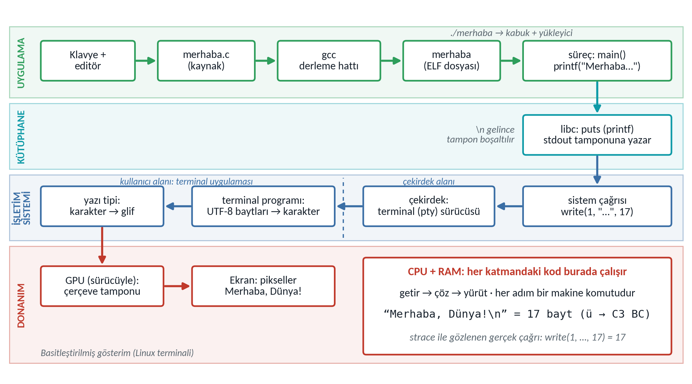
- Karakterler düzenleyiciyle
merhaba.cdosyasına UTF-8 baytları olarak yazılır. gccönişlemci → derleyici → çevirici → bağlayıcı aşamalarını çalıştırır;printfçağrısıputs'a, o da makine koduna dönüşür ve libc'ye bağlanır../merhabayazılınca yükleyici dosyayı RAM'e yerleştirir; CPUmain'in komutlarını getir–çöz–yürüt döngüsüyle yürütür.putsmetni stdout tamponuna yazar;\ngelince çekirdeğewrite(1, …, 17)sistem çağrısı yapılır.- Çekirdek baytları terminale iletir; terminal programı UTF-8 baytlarını karakterlere, yazı tipi gliflere çevirir; ekran kartı pikselleri çerçeve tamponuna yazar ve ekran onları yakar.
Ön bilgi yoklamasına dönüş: yanıtları göster
- Soru 1: RAM uçucudur, elektrik kesilince içeriği kaybolur; disk kalıcıdır. Hızlı bellek pahalı ve uçucu, büyük bellek ucuz ve kalıcı olduğu için iki ayrı yer vardır (bellek hiyerarşisi).
- Soru 2: Her şey bit örüntüsüdür: 'A' = 0x41, bir komut da bir sayıdır. Anlamı onu okuyan program verir (depolanmış program).
- Soru 3: İşlemci yalnızca makine kodunu yürütür; çeviriyi önişlemci, derleyici, çevirici ve bağlayıcı yapar, yükleyici sonucu belleğe yerleştirir.
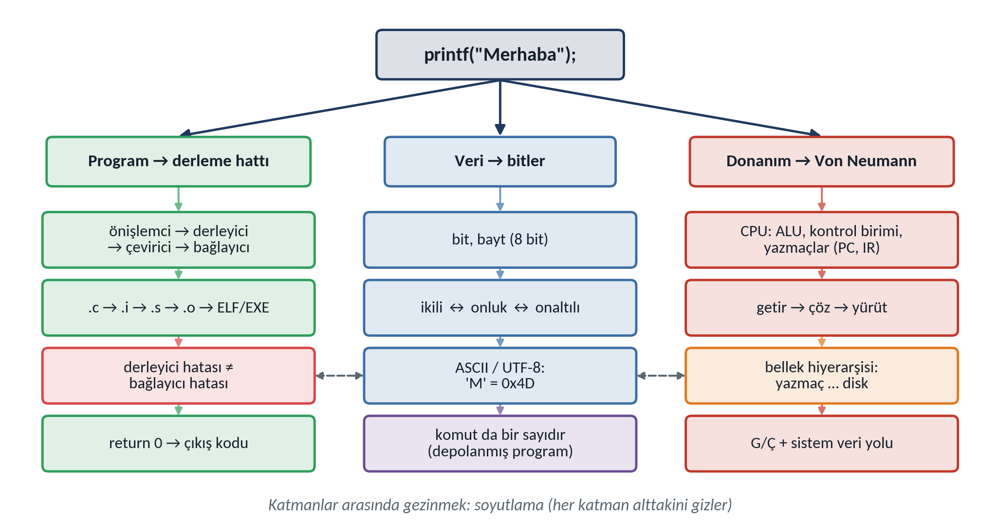
Terimler
- soyutlama · abstraction
- Her katmanın alttakinin ayrıntısını gizlemesi.
- komut kümesi mimarisi (ISA) · instruction set architecture
- İşlemcinin tanıdığı komutlar; donanım–yazılım sözleşmesi.
- merkezi işlem birimi (CPU) · central processing unit
- Komutları getirip çözen ve yürüten birim.
- aritmetik mantık birimi (ALU) · arithmetic logic unit
- Aritmetik ve mantık işlemlerini yapan devre.
- yazmaç · register
- CPU içindeki çok hızlı küçük saklama alanı.
- program sayacı (PC) · program counter
- Sıradaki komutun adresini tutan yazmaç.
- getir–çöz–yürüt · fetch–decode–execute
- İşlemcinin sürekli tekrarladığı komut döngüsü.
- bellek hiyerarşisi · memory hierarchy
- Yazmaçtan diske hız–kapasite–maliyet katmanları.
- önbellek · cache
- CPU ile RAM arasındaki küçük, hızlı bellek.
- veri yolu · bus
- Bileşenler arasında adres, veri ve denetim taşıyan hat.
- ikili · onaltılı · binary · hexadecimal
- 2 ve 16 tabanında sayı yazımı.
- önişlemci · preprocessor
#includeve#defineyönergelerini işler (.c → .i).- derleyici · compiler
- C'yi assembly'ye çevirir, hata ve uyarı üretir (.i → .s).
- çevirici · assembler
- Assembly'yi makine koduna çevirir (.s → .o).
- bağlayıcı · linker
- Nesne dosyalarını ve kütüphaneleri birleştirir.
- yükleyici · loader
- Programı belleğe yerleştirip çalıştırır.
- nesne dosyası · object file
- Makine kodu içeren, henüz bağlanmamış dosya (.o).
- tanımsız başvuru · undefined reference
- Bağlayıcının bir adı bulamaması.
- kaçış dizisi · escape sequence
\n,\tgibi tek karakteri gösteren yazım.- çıkış kodu · exit status
- Programın işletim sistemine döndürdüğü tamsayı.
- sistem çağrısı · system call
- Programın çekirdekten hizmet istemesi (ör.
write). - hata ayıklama · debugging
- Hatanın yerini bulup düzeltme süreci.
Gelecek hafta: algoritmik düşünme
Bu hafta önemli bir gerçekle karşılaştık: İşlemci ne yapacağını kendisi bilmez; oyuncak bilgisayarımız bile ancak adım adım, kesin ve sıralı talimatlarla 3 ile 4'ü toplayabildi. Bir problemi bu kesinlikte adımlara ayırma becerisine algoritmik düşünme denir ve H2'nin konusudur: IPO çözümlemesi, sözde kod, akış diyagramı ve izleme tablosuyla problemden algoritmaya gideceğiz; oyuncak bilgisayarda eksik olan “koşula göre sapma” ve “tekrar etme” yeteneklerinin neden vazgeçilmez olduğunu göreceğiz.
Kaynaklar ve ek okuma
- Bryant, R. E., & O'Hallaron, D. R. (2016). Computer systems: A programmer's perspective (3rd ed.). Pearson. (Bölüm 1)
- Deitel, P., & Deitel, H. (2022). C how to program: With case studies introducing applications and systems programming (9th ed., global ed.). Pearson.
- Hopper, G. M. (1952). The education of a computer. In Proceedings of the 1952 ACM National Meeting (Pittsburgh) (pp. 243–249). ACM. https://doi.org/10.1145/609784.609818
- ISO/IEC. (2018). Information technology — Programming languages — C (ISO/IEC Standard No. 9899:2018).
- Kernighan, B. W., & Ritchie, D. M. (1988). The C programming language (2nd ed.). Prentice Hall.
- National Museum of American History. (t.y.). Log book with computer bug (Nesne no. 1994.0191.01). Smithsonian Institution. https://americanhistory.si.edu/collections/object/nmah_334663
- Patterson, D. A., & Hennessy, J. L. (2017). Computer organization and design RISC-V edition: The hardware/software interface. Morgan Kaufmann. (Bölüm 1)
- Petzold, C. (2022). Code: The hidden language of computer hardware and software (2nd ed.). Microsoft Press.
- Ritchie, D. M. (1993). The development of the C language. ACM SIGPLAN Notices, 28(3), 201–208. https://doi.org/10.1145/155360.155580
- von Neumann, J. (1945). First draft of a report on the EDVAC. Moore School of Electrical Engineering, University of Pennsylvania.